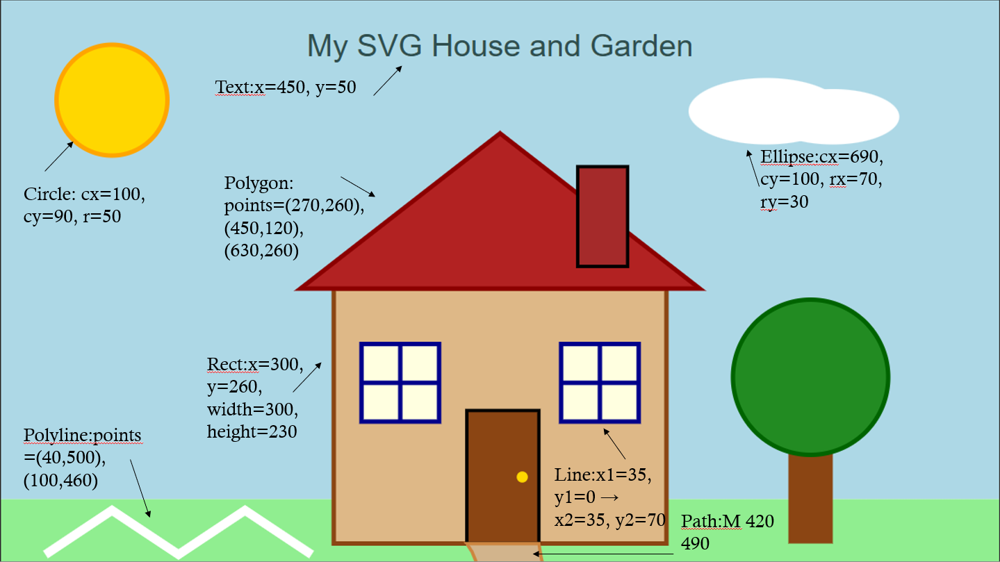

This picture was created using SVG shapes to demonstrate how SVG coordinates and elements work.
The annotated image below shows how the coordinates used in the SVG code relate to the shapes in the drawing.
